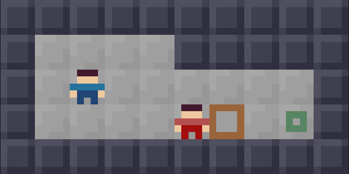

I made a little puzzle game. Give it a play and let me know what you think:
https://k-monk.org/project/those-who-wear-red/
PuzzleScript is a lovely little piece of software. It's a compiler for puzzle games written as systems of rewrite rules. Despite my affection for it, I'd never managed to actually use it to make a decent game. When I was at the Recurse Center in 2024, I'd tried to make a few prototypes, but none of them felt worth publishing.
A few weeks ago I told my friend May about PuzzleScript, and she immediately sat down and made an interesting prototype. Not to be outdone, I felt compelled to try again.
I wanted to play with the idea of avoidance. Guards who follow you in some pattern was an obvious place to start. Once I combined that with the typical sokoban box-pushing, lots of ideas sort of fell out naturally. Before I really knew what happened, I had 10 or 15 levels exploring the consequences of that combination. Then I had the idea introduced on level 20, and that felt like enough material for a small game. It could have been bigger; there's certainly more juice to squeeze. I'm fairly happy with the length, though, and I'm not sure the rules are quite interesting enough to warrant further exploration. I think it's about the right length for someone who hasn't played a huge amount of sokoban before to play in one or two sittings.

I composed the music in CLAVIER-36 (an audio programming environment I've been working on for a while). Here's a lossless bounce.
SPOILERS! PLAY THE GAME BEFORE READING FURTHER!
At first, I wrote the guard movement rules in such a way that they would respond to the player's starting position, instead of the player's ending position. Flipping that around was important.
I learned some things from watching friends play. There are always more alternate solutions than you think. I was repeatedly surprised to see people find solutions I hadn't intended. There's huge variance in what people find difficult. If you design each puzzle to each express an idea, then getting stuck is fairly binary; either the player sees the idea, or they don't. Something that one person sees instantly, another might stare at for ages without insight. None of this is terribly shocking; I'm just appreciating it in a way I hadn't as a player.
In general, I tried to cut each level to only the necessary components. If followed blindly, though, this principle might lead you to constrain the space so tightly that only the solution remains (for example, by filling every unused cell with a wall). At some point, I noticed myself leaning a little too far in this direction, and had to ease up on this instinct. Some degree of giving the player space to make mistakes is needed.
Some remarks on specific levels:
Thanks to Nick la Rooy, Roujia Wen, and to various people from the London permacomputing group for help playtesting.